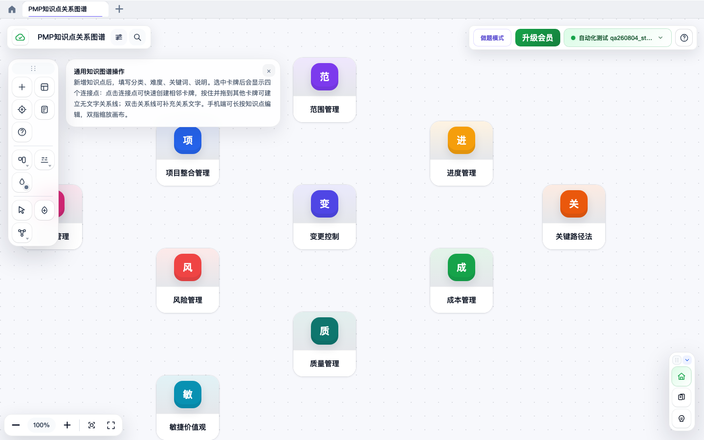
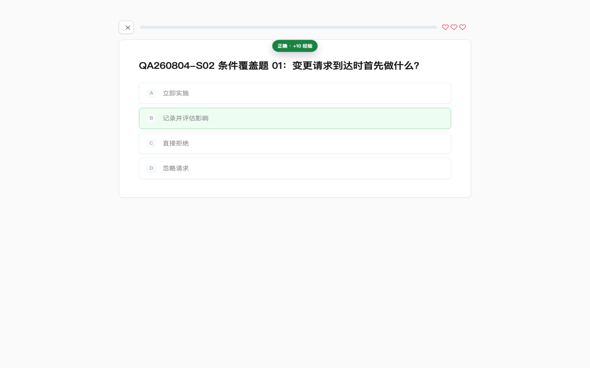
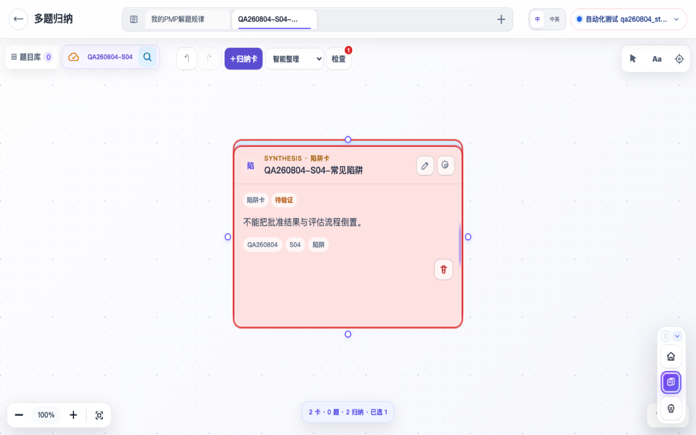
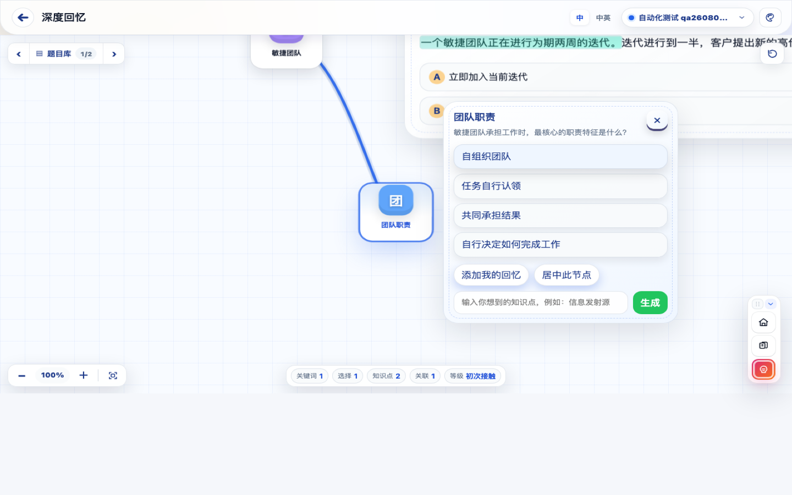

看完就忘
章节学完了，面对情境题却想不起该用哪个知识点，熟悉感并不等于真正掌握。
WHY HUANPU 01
你缺少的可能不是下一本资料，而是一套能把理解、错误和记忆连在一起的方法。
章节学完了，面对情境题却想不起该用哪个知识点，熟悉感并不等于真正掌握。
做过很多题，错误原因却没有回到知识体系里。下次换一个情境，同样的误区再次出现。
不知道哪里薄弱，只能一遍又一遍从头翻书。花了很多时间，却没有形成清晰的提升路径。
THE LEARNING LOOP 02
每一步都有清晰产出，下一步都建立在前一步之上。
看见过程、原则与知识领域之间的关系，让每个考点在体系中找到位置。
在真实情境中检验理解，关注为什么选择，而不是记住一个答案。
把题目、线索和易错点重新放回知识网络，让每次错误都留下结构。
脱离答案重建路径，用真正的提取练习形成更牢固的长期记忆。
一次学习循环，完成从“看过”到“掌握”的转变。
INSIDE HUANPU 03
四种学习方式，共享同一套知识脉络。这里展示的每一屏，都来自幻谱当前真实产品。

查看知识节点、关系线与完整画布结构。
进入知识图谱01 / 04
把过程组、知识领域和关键方法放进同一张无限画布。拖动、连接、补充说明，在整理中完成理解。

通过已发布试卷检验当前知识掌握情况。
进入做题模式02 / 04
选择已发布试卷开始练习，在选项反馈与解析中定位误区。不是追求刷题数量，而是看清自己为什么会错。

把多道题放进同一张画布，对比线索与解题规律。
进入知识归纳03 / 04
在同一张画布中对比多道题，提炼触发词、干扰项和解题原则，让零散错误沉淀成可复用的判断方法。

脱离答案，在联想画布上主动重建知识路径。
进入深度回忆WHY IT WORKS 04
幻谱不堆叠功能，而是把有效的备考动作变成一条可以执行、可以回看的路径。
把新知识放进已有结构，知道它从哪里来、和什么相连。
每一次错误都指向一个具体的理解缺口。
不看答案重建知识，才能知道自己是否真的记住。
BEFORE YOU START 05
找不到答案？登录后可以从软件内进入帮助中心。
可以。你可以从空白图谱开始，也可以先浏览现有的示例结构。建议从正在学习的章节选出 5—10 个核心考点，先建立第一组关系。
从刚开始建立知识框架，到冲刺阶段整理错题和主动回忆，都可以使用。基础阶段侧重构建图谱，强化阶段侧重做题归纳，冲刺阶段侧重快速回忆。
不需要。幻谱在现代浏览器中即可使用。为获得更舒适的图谱编辑体验，建议优先使用电脑端浏览器。
登录后创建和修改的正式学习内容会通过系统服务保存；页面会显示保存状态。访客进入时请留意页面提示，重要内容建议先登录再编辑。